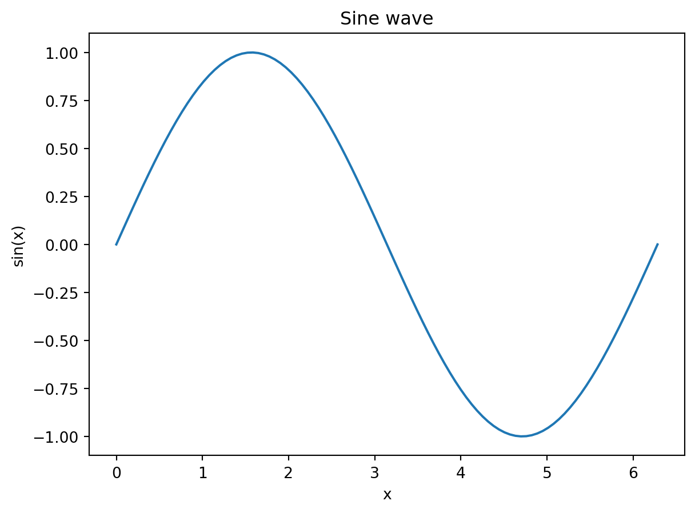
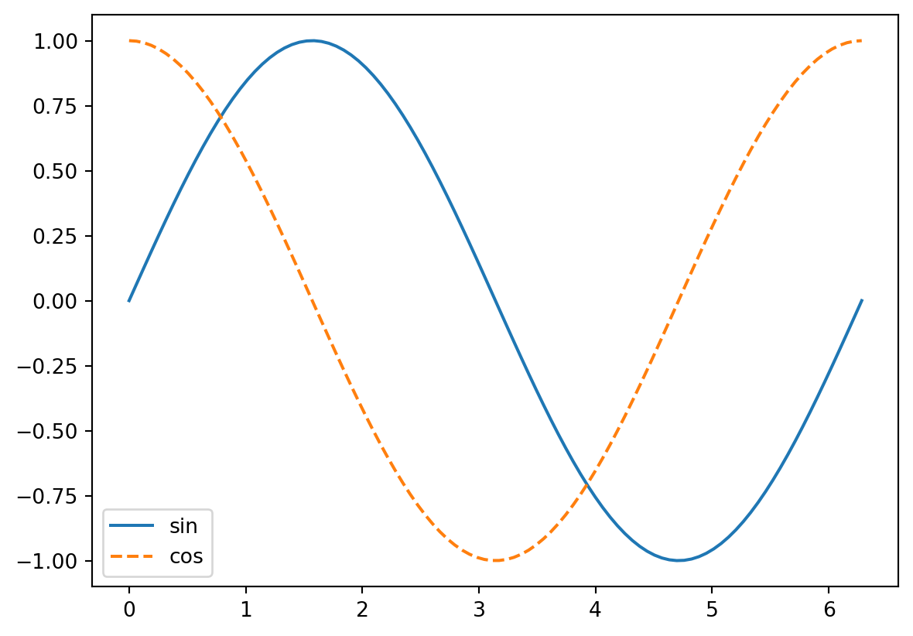
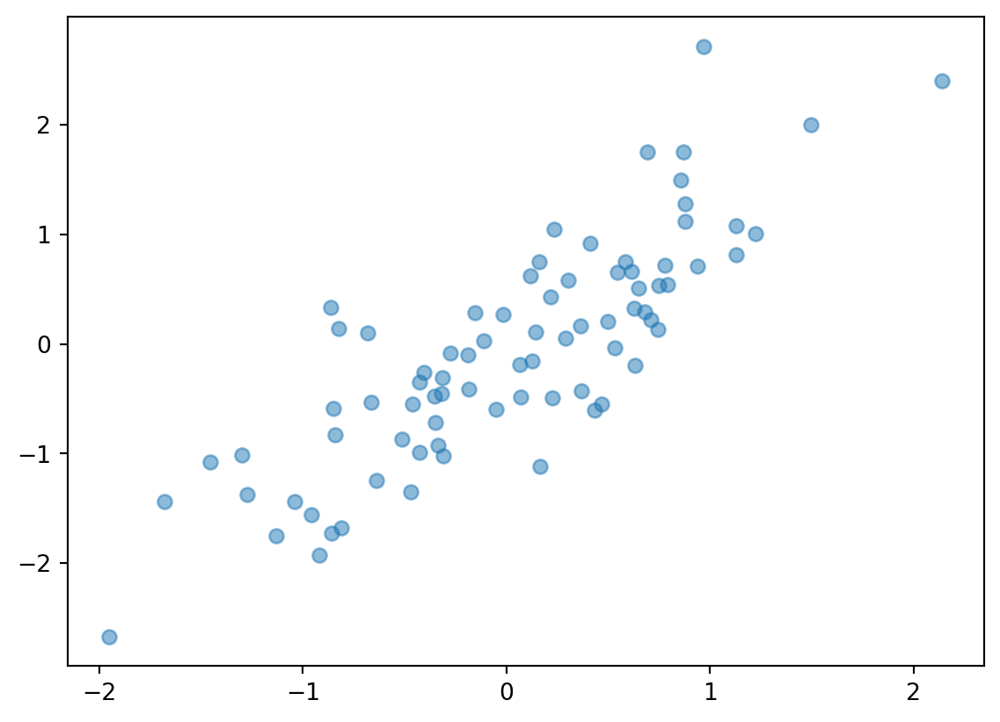
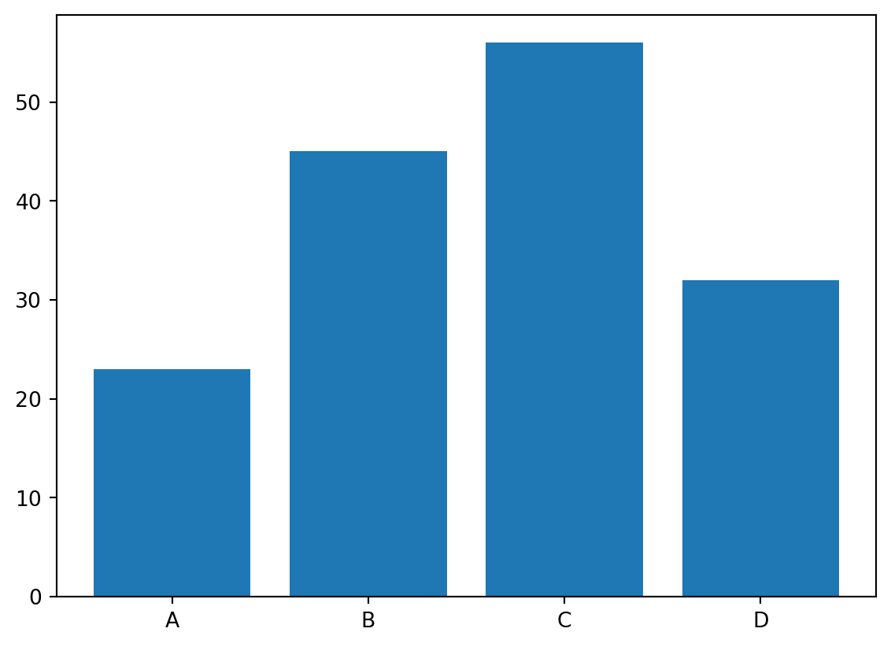
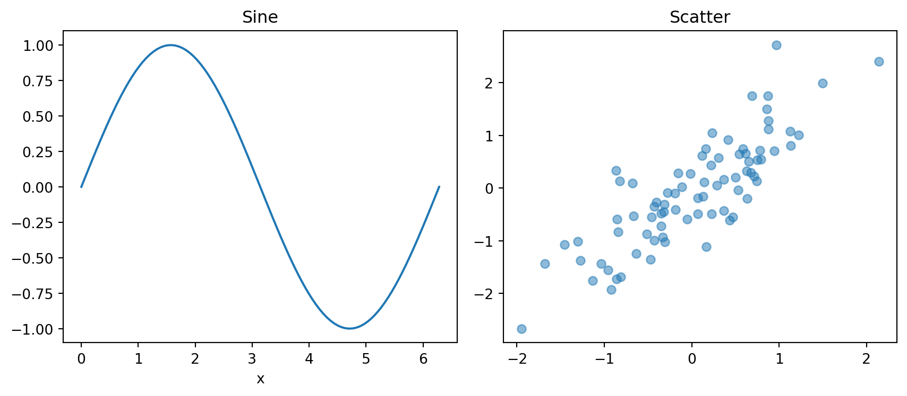
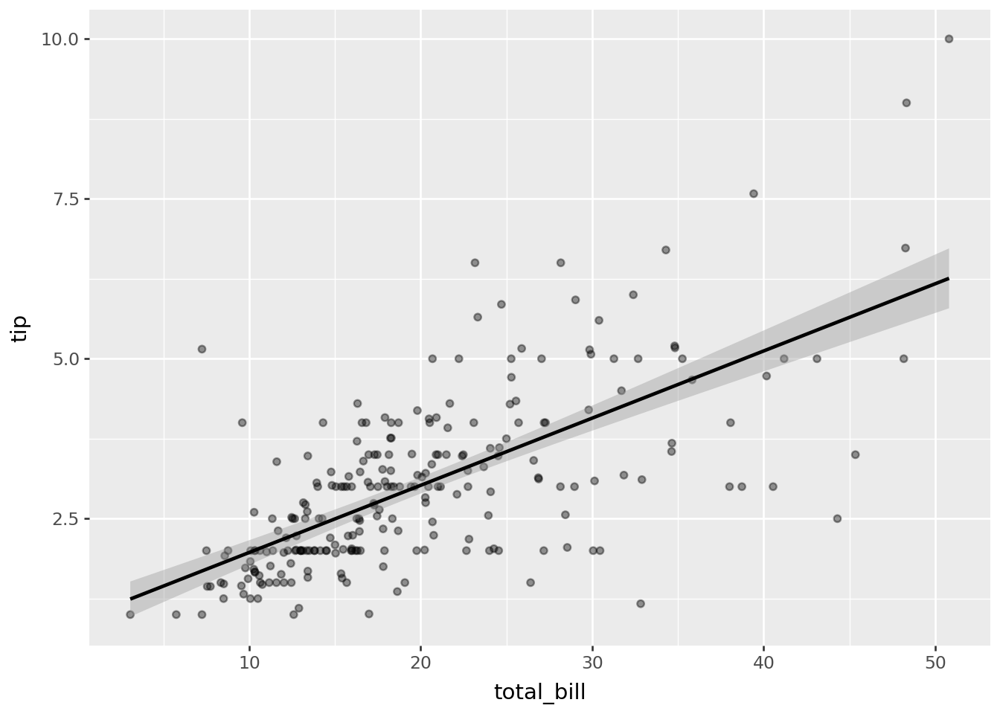
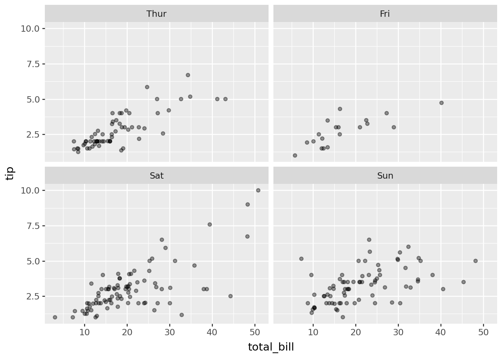

import numpy as np
import pandas as pd
import matplotlib.pyplot as plt
x = np.linspace(0, 2 * np.pi, 100)
plt.plot(x, np.sin(x))
plt.xlabel('x')
plt.ylabel('sin(x)')
plt.title('Sine wave');
Visualization and Statistical Modelling
Mark Andrews
7 April, 2026
This session covers data visualization and statistical modelling in Python. We begin with Matplotlib, the foundational plotting library, covering the pyplot interface, common plot types, and the object-oriented API for multi-panel figures. We then introduce Seaborn, which builds on Matplotlib to produce statistical graphics from tidy data with minimal code. The third topic is plotnine, a Python implementation of the grammar of graphics that closely mirrors R’s ggplot2. The session closes with statistical modelling using statsmodels, covering linear regression, logistic regression, and linear mixed-effects models via the formula API, together with a brief survey of the broader Python statistical modelling ecosystem.
Matplotlib is the foundational plotting library for Python. Most other visualization libraries build on it or interact with it. The pyplot interface provides a collection of functions that operate on the current figure and axes, following a style similar to MATLAB.
In Jupyter — and in Quarto, which runs the same kernel — figures are captured and displayed automatically at the end of each cell. plt.show() is therefore not needed and can be omitted throughout. In a standalone Python script there is no display infrastructure, so plt.show() would be required there to open the figure window. One small housekeeping point: matplotlib functions return objects, and without plt.show() the text representation of those objects (something like [<matplotlib.lines.Line2D object at 0x7f...>]) would print above the figure. A trailing semicolon on the last call in a cell suppresses this.

Multiple calls to plot add lines to the same axes. Labels passed via the label argument are collected into a legend with plt.legend().

plt.scatter draws a scatter plot. The alpha argument controls transparency and is useful when points overlap.

Other standard plot types follow the same call pattern.

For multi-panel figures, the object-oriented API is cleaner than repeated pyplot calls. plt.subplots returns a figure and an array of axes objects; each axis is then configured independently.

The method names on an axis object mirror the pyplot functions, with set_ prefixes replacing standalone functions like xlabel and title. plt.tight_layout() adjusts spacing so that labels and titles do not overlap.
Seaborn wraps Matplotlib with functions designed to work directly with Pandas DataFrames. Functions accept a data argument and column names as strings, so there is no need to extract arrays manually. Seaborn uses the tips dataset, which ships with the library, throughout this section.
| total_bill | tip | sex | smoker | day | time | size | |
|---|---|---|---|---|---|---|---|
| 0 | 16.99 | 1.01 | Female | No | Sun | Dinner | 2 |
| 1 | 10.34 | 1.66 | Male | No | Sun | Dinner | 3 |
| 2 | 21.01 | 3.50 | Male | No | Sun | Dinner | 3 |
| 3 | 23.68 | 3.31 | Male | No | Sun | Dinner | 2 |
| 4 | 24.59 | 3.61 | Female | No | Sun | Dinner | 4 |
histplot draws a histogram, optionally overlaid with a kernel density estimate. The hue argument splits the distribution by a categorical variable.
scatterplot maps two continuous variables to position, with optional mappings to colour, style, and size.
regplot adds a linear regression line with a confidence band to a scatter plot.
boxplot and violinplot summarise the distribution of a continuous variable across levels of a categorical one.
lmplot combines a scatter plot and regression line and supports faceting by a third variable into separate panels.
plotnine is a Python implementation of the grammar of graphics, closely modelling R’s ggplot2. A plot is built by adding layers with +: an initial ggplot call defines the data and aesthetic mappings, geometric layers specify how variables are drawn, and further components control scales, labels, and themes.
geom_smooth adds a fitted line. The method='lm' argument requests a linear fit with a confidence band.

facet_wrap creates a separate panel for each level of a variable.

facet_grid arranges panels in a two-way grid defined by two variables.
Labels and themes are added in the same way.
Other geometric layers follow the same pattern.
For users coming from R, plotnine’s syntax is nearly identical to ggplot2, with column names passed as strings rather than bare names.
statsmodels provides a formula interface for statistical models that closely resembles R’s model syntax. smf.ols fits ordinary least squares regression; the first argument is a formula string in which ~ separates the response from the predictors.
| subjectid | gender | height | weight | handedness | age | race | |
|---|---|---|---|---|---|---|---|
| 0 | 10027 | male | 177.6 | 81.5 | right | 41 | white |
| 1 | 10032 | male | 170.2 | 72.6 | left | 35 | white |
| 2 | 10033 | male | 173.5 | 92.9 | left | 42 | black |
| 3 | 10092 | male | 165.5 | 79.4 | right | 31 | white |
| 4 | 10093 | male | 191.4 | 94.6 | right | 21 | black |
OLS Regression Results
==============================================================================
Dep. Variable: weight R-squared: 0.436
Model: OLS Adj. R-squared: 0.436
Method: Least Squares F-statistic: 4688.
Date: Tue, 07 Apr 2026 Prob (F-statistic): 0.00
Time: 10:45:46 Log-Likelihood: -23563.
No. Observations: 6068 AIC: 4.713e+04
Df Residuals: 6066 BIC: 4.714e+04
Df Model: 1
Covariance Type: nonrobust
==============================================================================
coef std err t P>|t| [0.025 0.975]
------------------------------------------------------------------------------
Intercept -117.1280 2.879 -40.688 0.000 -122.771 -111.485
height 1.1481 0.017 68.472 0.000 1.115 1.181
==============================================================================
Omnibus: 190.197 Durbin-Watson: 1.893
Prob(Omnibus): 0.000 Jarque-Bera (JB): 214.639
Skew: 0.414 Prob(JB): 2.46e-47
Kurtosis: 3.404 Cond. No. 3.27e+03
==============================================================================
Notes:
[1] Standard Errors assume that the covariance matrix of the errors is correctly specified.
[2] The condition number is large, 3.27e+03. This might indicate that there are
strong multicollinearity or other numerical problems.The fitted object exposes estimated coefficients, standard errors, p-values, and confidence intervals as attributes.
predict returns fitted values for the original data or for new data supplied as a DataFrame.
0 66.574003
1 78.055379
2 89.536755
dtype: float64Multiple predictors are added with +. Categorical columns are expanded into indicator variables automatically. Interactions use :, and * includes both main effects and the interaction.
Logistic regression is fitted with smf.logit and follows the same interface.
Optimization terminated successfully.
Current function value: 0.414004
Iterations 8
Logit Regression Results
==============================================================================
Dep. Variable: heavy No. Observations: 6068
Model: Logit Df Residuals: 6064
Method: MLE Df Model: 3
Date: Tue, 07 Apr 2026 Pseudo R-squ.: 0.2538
Time: 10:45:46 Log-Likelihood: -2512.2
converged: True LL-Null: -3366.5
Covariance Type: nonrobust LLR p-value: 0.000
==================================================================================
coef std err z P>|z| [0.025 0.975]
----------------------------------------------------------------------------------
Intercept -27.6712 1.022 -27.075 0.000 -29.674 -25.668
gender[T.male] 1.1942 0.142 8.421 0.000 0.916 1.472
height 0.1372 0.006 23.345 0.000 0.126 0.149
age 0.0532 0.004 13.486 0.000 0.045 0.061
==================================================================================Linear mixed-effects models are fitted with smf.mixedlm. The groups argument identifies the random-effects grouping variable, and the formula can include random slopes.
| Reaction | Days | Subject | |
|---|---|---|---|
| 0 | 249.5600 | 0 | s308 |
| 1 | 258.7047 | 1 | s308 |
| 2 | 250.8006 | 2 | s308 |
| 3 | 321.4398 | 3 | s308 |
| 4 | 356.8519 | 4 | s308 |
Mixed Linear Model Regression Results
========================================================
Model: MixedLM Dependent Variable: Reaction
No. Observations: 180 Method: REML
No. Groups: 18 Scale: 960.4568
Min. group size: 10 Log-Likelihood: -893.2325
Max. group size: 10 Converged: Yes
Mean group size: 10.0
--------------------------------------------------------
Coef. Std.Err. z P>|z| [0.025 0.975]
--------------------------------------------------------
Intercept 251.405 9.747 25.794 0.000 232.302 270.508
Days 10.467 0.804 13.015 0.000 8.891 12.044
Group Var 1378.176 17.156
========================================================
An honest answer to “should I do my statistical analysis in Python?” is: probably not, unless you have a specific reason to. R has a deeper and more mature ecosystem for statistical modelling. Packages like lme4, brms, mgcv, and survival cover a range of models that either have no Python equivalent or have equivalents that are less well-developed and less widely used. If you are working in Positron or VS Code, switching between Python and R within the same project is straightforward, and data can be shared between them using the Arrow/Feather format (pd.DataFrame.to_feather, arrow::read_feather in R) with no conversion overhead.
That said, several Python packages do cover a reasonable breadth of statistical analysis.
statsmodels covers standard frequentist regression models: OLS, GLMs, mixed effects, time series (ARIMA, VAR), and survival analysis.
PyMC is the main Bayesian modelling library. Its syntax is similar in spirit to Stan or brms: you define priors and a likelihood, and PyMC handles sampling via NUTS or other MCMC algorithms.
pingouin provides a collection of frequentist tests — t-tests, ANOVA, correlation, chi-square — with a clean DataFrame-based interface and effect sizes included by default.
lifelines covers survival analysis: Kaplan-Meier estimates, log-rank tests, and Cox proportional hazards regression.
scikit-learn is the standard library for machine learning rather than statistical inference: it covers cross-validation, regularised regression, classification, clustering, and preprocessing, but it does not produce p-values or confidence intervals.